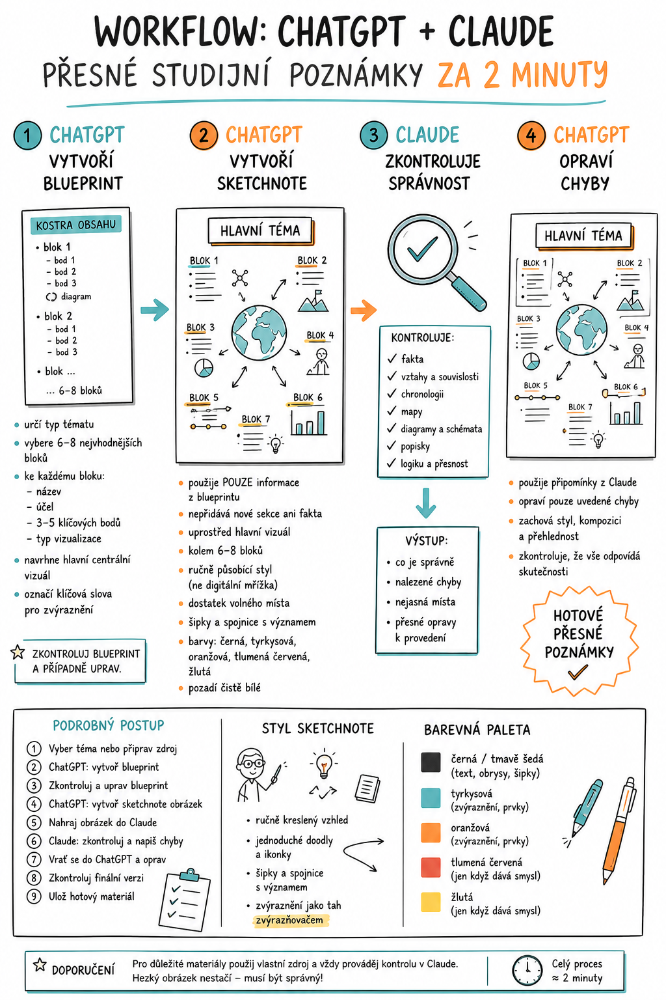

Cílem je vytvořit vizuální studijní poznámky / sketchnote / přehledové infografické poznámky, které budou obsahově správné, přehledné, vizuálně použitelné pro výuku a nebudou plné AI halucinací.
Zkratka celého postupu:
1. ChatGPT připraví obsahovou kostru
2. ChatGPT z ní udělá vizuální poznámky
3. Claude zkontroluje fakta i obrázek
4. ChatGPT opraví chyby
1. Co si připravit předem
Než začneš, připrav si jednu z těchto variant vstupu:
Varianta A: zadáš jen téma
Použij, když chceš rychle vytvořit materiál z běžného tématu.
Například: Helénistická království, elektrický proud, typy států, Present Simple nebo podstata státu.
Varianta B: dodáš vlastní zdroj
Použij, když chceš, aby poznámky vycházely z konkrétního dokumentu: PDF z učebnice, vlastní prezentace, článek, pracovní text nebo výpisky.
Tohle je většinou lepší. Staré dobré pravidlo: když AI krmíš lepším materiálem, dělá méně hloupostí.
2. Nástroje, které potřebuješ
- ChatGPT – na vytvoření obsahu a obrázku
- Claude – na kontrolu správnosti hotového výstupu
Doporučení:
- v ChatGPT dělej obsah i obrázek v jednom vlákně,
- Claude používej až na hotovou výslednou grafiku.
3. Fáze 1 – vytvoření obsahového blueprintu v ChatGPT
Co je blueprint
Je to obsahová kostra poznámek. Ještě ne obrázek. Je to plán toho, co přesně má ve vizuálu být.
To je důležité, protože když tenhle krok přeskočíš, model začne „kouzlit“ a přibarvovat realitu. A to je přesně ta chvíle, kdy se z výuky stane cirkus.
Postup
- Otevři nový chat v ChatGPT.
- Buď napiš téma, nebo nahraj PDF či zdrojový materiál.
- Vlož prompt pro vytvoření blueprintu.
Prompt pro vytvoření blueprintu
Cíl: Připrav podklad pro přehledné ručně působící studijní poznámky pro žáky na úrovni [DOPLŇ VĚK / ROČNÍK / ÚROVEŇ].
Nejprve urč, jaký typ tématu to je. Poté vyber přibližně 6 až 8 nejvhodnějších obsahových bloků. Nepoužívej automaticky stejné sekce pro každé téma a vyber jen bloky, které se pro dané téma opravdu hodí.
Každý blok uveď takto: krátký název, velmi stručné vysvětlení / účel, 3 až 5 klíčových bodů a vhodný typ vizualizace. Upřednostni pojmy, data, jména, vztahy, kroky, příklady, porovnání, příčiny a důsledky. Neopakuj stejné informace v různých blocích.
Nakonec navrhni hlavní centrální vizuál a označ slova, která mají být ve finálním obrázku zvýrazněna. Výstup chci přehledně strukturovaný a připravený jako podklad pro následné generování obrázku.
Co máš po tomto kroku udělat ty
Blueprint si rychle zkontroluj ručně. Zeptej se, jestli v něm nejsou nesmysly, nechybí zásadní věc, není tam něco navíc, neopakují se stejné body a jestli odpovídá úrovni žáků.
Když něco nesedí
Hned to oprav v tom samém chatu. Můžeš napsat například:
- „Zjednoduš to pro 1. ročník učiliště.“
- „Přidej více důrazu na příčiny a důsledky.“
- „Vynech příliš odborné detaily.“
- „Nahraď blok X blokem o praktickém využití.“
- „Zkrať text, aby byl vhodný do vizuálních poznámek.“
Teprve když blueprint dává smysl, pokračuj dál.
4. Fáze 2 – vytvoření obrázku v ChatGPT
Důležité pravidlo
Generátor obrázku musí brát blueprint jako jediný zdroj pravdy. Jinak si začne vymýšlet pomocná shrnutí, dodatečné boxíky, nové sekce a podobné zlozvyky.
Prompt pro vytvoření sketchnote obrázku
Použij pouze informace z blueprintu výše. Nepřidávej žádná nová fakta, nové sekce ani nové závěry. Uprostřed stránky umísti hlavní centrální vizuál navržený v blueprintu a kolem něj rozmísti 6 až 8 obsahových bloků.
Každý blok má mít stručný ručně psaný nadpis, krátké body, jednoduché doodly nebo malé tematické ilustrace a podle potřeby diagram, časovou osu, porovnání nebo schéma. Používej šipky a spojnice jen tam, kde dávají významový smysl.
Styl má být čistý, čitelný, ručně kreslený a školní. Pozadí musí být čistě bílé. Hlavní barvy: černá / tmavě šedá, tyrkysová a oranžová, případně tlumená červená a žlutá jen střídmě. Nepoužívej realistické portréty ani stockové ikony. Poměr stran: 3:4.
Co zkontrolovat po vygenerování obrázku
- jsou všechny nadpisy čitelné?
- nejsou v textu překlepy?
- dává mapa, osa nebo schéma smysl?
- nejsou popisky u špatných prvků?
- nechybí některý blok?
- nepřidal model něco, co v blueprintu nebylo?
Pokud je obrázek úplně mimo, radši ho vygeneruj znovu. Když je základ dobrý, ale má chyby, přejdi ke kontrole v Claude.
5. Fáze 3 – kontrola hotového obrázku v Claude
A tady přichází část, kterou spousta lidí odflákne. Hezký obrázek není totéž co správný obrázek.
Co nahraješ do Claude
- hotový obrázek vytvořený v ChatGPT,
- případně původní téma nebo zdrojový text.
Prompt pro kontrolu v Claude
Ověř správnost faktů, vztahů mezi informacemi, časové posloupnosti, map, diagramů, schémat, vizuálních prvků a popisků. Zkontroluj také, zda obrázek neobsahuje nepřesnosti, zavádějící zjednodušení nebo chybnou interpretaci.
Postupuj přísně. Výstup rozděl do částí: 1. Co je správně, 2. Nalezené chyby, 3. Nejasná nebo podezřelá místa, 4. Přesné opravy, které je potřeba udělat.
Nechceš obecné tlachání typu „vypadá to dobře“. Chceš konkrétní chyby, konkrétní sporná místa a konkrétní instrukce k opravě.
6. Fáze 4 – opravný cyklus zpět v ChatGPT
Vezmi Claudeův seznam připomínek a vrať se do ChatGPT k původnímu obrázku. Použij režim Edit nebo doplňující instrukci.
Prompt pro opravu obrázku
Zachovej celkový styl, kompozici a ručně kreslený vzhled, ale oprav tyto chyby: [SEM VLOŽ PŘIPOMÍNKY Z CLAUDE].
Oprav pouze uvedené chyby, nepřidávej nové sekce ani nové informace, zachovej přehlednost a čitelnost a zkontroluj, že opravené popisky, vztahy, diagramy a vizuální prvky odpovídají skutečnosti.
Po opravě
Znovu zkontroluj čitelnost, správnost a to, jestli oprava nerozbila něco jiného. Když je potřeba, pošli opravenou verzi ještě jednou do Claude.
7. Doporučený přesný pracovní postup v bodech
- Vyber téma nebo připrav zdrojový dokument.
- Otevři nový chat v ChatGPT.
- Zadej prompt na vytvoření blueprintu.
- Zkontroluj blueprint a případně ho uprav.
- Ve stejném chatu zadej prompt na vytvoření obrázku.
- Nech vygenerovat sketchnote.
- Rychle ručně zkontroluj čitelnost a základní logiku.
- Nahraj hotový obrázek do Claude.
- Zadej prompt na kontrolu.
- Zkopíruj seznam oprav z Claude.
- Vrať se do ChatGPT a oprav obrázek.
- Po opravě udělej finální kontrolu.
- Ulož hotový materiál.
8. Co si ukládat pro pořádek
Doporučuji si ukládat původní téma nebo zdroj, finální blueprint, první verzi obrázku a opravenou finální verzi. Když se později něco rozbije nebo budeš chtít stejný styl znovu, nebudeš lovit v močálu starých chatů.
9. Kdy je tohle workflow nejlepší
Používej ho hlavně na dějepisná témata, občanku, zeměpis, přírodopis / biologii, chemii, fyziku, jazykové přehledy, odborné přehledy a pracovní listy s vysvětlující částí.
10. Nejčastější chyby
- Přeskočení blueprintu: pak AI generuje pěkný chaos.
- Příliš dlouhý text: sketchnote není učebnice. Když tam nacpeš román, vznikne vizuální guláš.
- Nekontrolování vizuálů: text bývá někdy správně, ale mapa, schéma nebo osa jsou špatně.
- Slepá důvěra v první výstup: první výstup je často „docela dobrý“, což je zrádná kategorie.
- Nejasné opravy: když do ChatGPT napíšeš jen „oprav to“, dostaneš loterii. Opravy musí být konkrétní.
11. Doporučení pro školní praxi
Když potřebuješ rychlost
- zadat téma,
- blueprint,
- obrázek,
- rychlá Claude kontrola,
- hotovo.
Když jde o důležitý materiál
- dát vlastní zdroj,
- blueprint ručně pročistit,
- obrázek,
- Claude kontrola,
- oprava,
- případně druhá kontrola.
Na důležité materiály pro studenty je druhá varianta bezpečnější. Je pomalejší, ale stará dobrá pravda: dvakrát měř, jednou tiskni.
12. Moje doporučená jednoduchá rutina pro tebe
Pokud chceš co nejméně zmatků, drž se tohoto:
- Vyber téma.
- Udělej blueprint.
- Uprav blueprint.
- Vygeneruj obrázek.
- Hoď obrázek do Claude.
- Oprav podle Claude.
- Ulož finální verzi.
13. Rychlá verze na jednu obrazovku
• vytvoř blueprint
• z blueprintu vytvoř obrázek
Claude
• zkontroluj hotový obrázek
ChatGPT
• oprav chyby podle Claude
14. Závěr
Tohle workflow je dobré hlavně proto, že odděluje obsah od vizuálu a tvorbu od kontroly. A to je přesně správně. Jeden model tvoří, druhý kontroluje. Staré dobré „čtyři oči“ — jen digitální.
Další možné rozšíření je zkrácená taháková verze na A4, české copy-paste prompty nebo upravená verze přímo pro konkrétní školní předmět.
